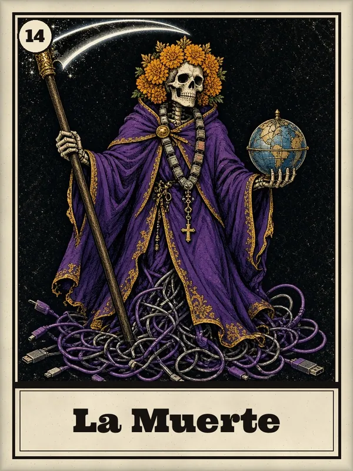

Games / One universe, two experiences
lotee
Lotería del Horror Moderno 2.0 and Nadie Mira Arriba. From the card table to a night that never ends.

Independent studio · botwave1904
Original art, vivid cards, and independent games. Welcome to BOTWAVE — choose a world and step inside.
Games / One universe, two experiences
Lotería del Horror Moderno 2.0 and Nadie Mira Arriba. From the card table to a night that never ends.

Visual books. A separate collection, page by page. Explore the books ↗